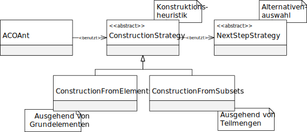

Package eu.andredick.aco.construct
Class AbstractConstructionStrategy<E extends AbstractNextStepStrategy,P extends AbstractProblem,S extends AbstractSolution>
- java.lang.Object
-
- eu.andredick.aco.construct.AbstractConstructionStrategy<E,P,S>
-
- Type Parameters:
E- Ausprägung der Alternativenauswahl, die bei der Konstruktion benutzt werden soll.
- Direct Known Subclasses:
ConstructionFromElements,ConstructionFromSubsets
public abstract class AbstractConstructionStrategy<E extends AbstractNextStepStrategy,P extends AbstractProblem,S extends AbstractSolution> extends java.lang.Object
Abstrakte Konstruktionsheuristik.
Kapitel 3.3.4, S. 30, Konstruktionsheuristik
Die Ausprägungen dieser Komponente werden durch die KlasseACOAnt(Ameise) verwendet, um neue Lösungen zu konstruieren.
Die Konstruktionsheuristik und die Alternativenauswahl hängen logisch stark voneinander ab,
so dass generell nicht jede beliebige Ausprägung der Alternativenauswahl mit einer bestimmten Konstruktionsheuristik verwendet werden kann.
Aus diesem Grund muss bei der Ableitung dieser abstrakten Klasse die generische Alternativenauswahl festgelet werden.

-
-
Field Summary
Fields Modifier and Type Field Description protected EnextStepRuleRegel für die Alternativenauswahl, die bei der Konstruktion benutzt werden soll.
-
Constructor Summary
Constructors Constructor Description AbstractConstructionStrategy(E nextStepRule)Konstruktor
-
Method Summary
All Methods Instance Methods Abstract Methods Modifier and Type Method Description abstract Sconstruct(P problem)Die Methode startet den Konstruktionsvorgang und liefert nach seinem Durchlauf eine vollständige Lösung des übergebenen Problems.
Die Methode wird in der Klasse ACOAnt aufgerufen.
-
-
-
Field Detail
-
nextStepRule
protected E extends AbstractNextStepStrategy nextStepRule
Regel für die Alternativenauswahl, die bei der Konstruktion benutzt werden soll.
-
-
Constructor Detail
-
AbstractConstructionStrategy
public AbstractConstructionStrategy(E nextStepRule)
Konstruktor- Parameters:
nextStepRule- Regel für die Alternativenauswahl, die bei der Konstruktion benutzt werden soll.
-
-
Method Detail
-
construct
public abstract S construct(P problem)
Die Methode startet den Konstruktionsvorgang und liefert nach seinem Durchlauf eine vollständige Lösung des übergebenen Problems.
Die Methode wird in der Klasse ACOAnt aufgerufen.- Parameters:
problem- Das AbstractProblem, für welches durch die Ameise eine Lösung konstruiert werden soll.- Returns:
- Vollständige konstruierte Lösung
-
-